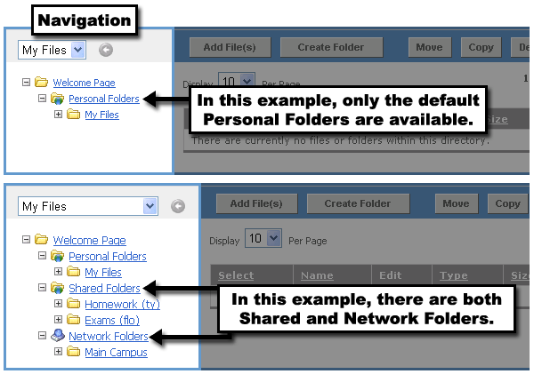
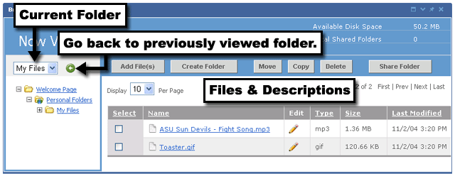
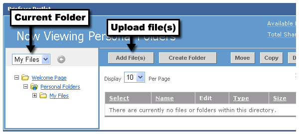
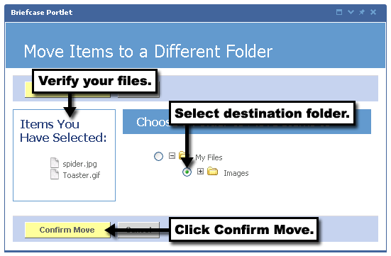
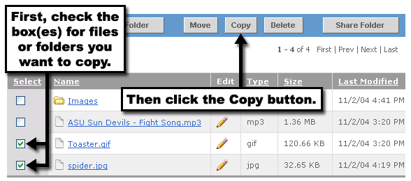
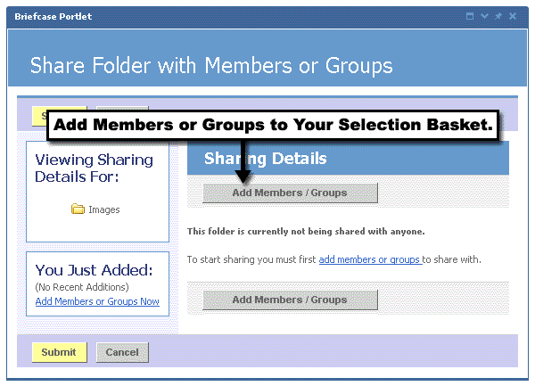
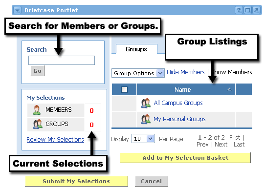
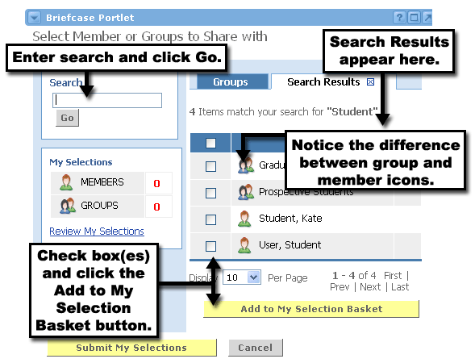
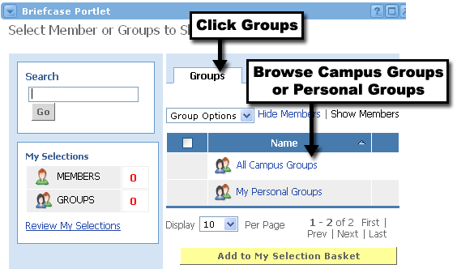
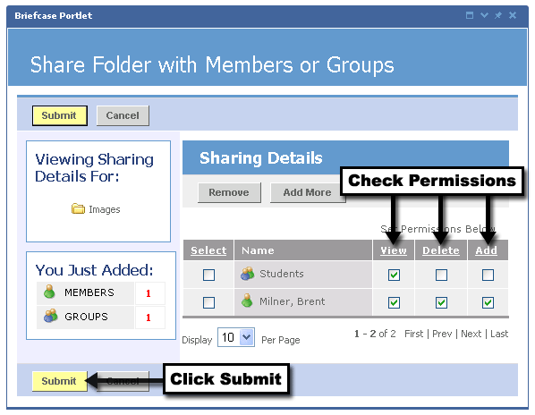

Briefcase Portlet
Looking for more help options? Click Here
The Briefcase Portlet allows individuals to maintain a personal set of folders and files. It also provides portfolio capabilities by allowing a user to share folders and their contents with other portal users.
Upon viewing the Briefcase Portlet for the first time, you will see the welcome screen from the image below. At this point, you need to decide which of your folders you want to view. Choose either Personal, Personal LDAP Folders, Shared, or Network folders. The options enabled may vary for your institution.

Navigating Around the Briefcase
Once you enter the briefcase, the Personal Folders screen can be broken up into two parts. On the left is the folder navigation, and on the right are the contents within the selected folder. Within the navigation area, by default, you will see links to the Welcome Page (which takes you back to the Welcome screen above), your Personal Folders, and the My Files folder. If someone has already Shared Folders with you, or if you have Peronal LDAP Folders or Network Folders already enabled, those will be listed beneath your Personal Folders.

Viewing Contents of a Folder
To view the contents of any folder (Personal, Personal LDAP,Shared, or Network), click the name of the folder in the left navigation area. You can also expand the folder tree to see subfolders by clicking on the plus (+) button to the left of the folder icon. The current folder will always be displayed in the drop-down list at the top of the navigation area. Within the Files and Description area, click on the arrow icon in the Name column to sort the list by file name.

Adding Files to the Briefcase
Before uploading a file to your Briefcase, make sure you first select the folder where you want the file to go. This is done by clicking the folder's name in the left navigation area. Verify that the folder's name appears in the drop-down menu at the top of the navigation area.
When you are ready, click the Add File(s) button to begin choosing files to upload.

You can upload up to five files at a time into your Briefcase. Depending on your institution's rules, there may be a size limitation placed on each individual file. If this is the case, the file size limit will be stated on the left in bold lettering.
To search your computer for a file to add, follow these steps:
- Click any of the Browse... buttons.
- Then traverse through your computer's directory structures to locate the file.
- Select the file by clicking it.
- Click the Open button.
- You will now see the path to this file has been entered into the text field. To add more files, repeat steps 1-4.
- When you are finished locating files, click either of the Upload Now buttons.
You will now see that the file has been added to your Briefcase.

Creating Briefcase Folders
Before creating a new folder in your Briefcase, make sure you first select the folder where you want the file to go. This is done by clicking the folder's name in the left navigation area. Verify that the folder's name appears in the drop-down menu at the top of the navigation area.
When you are ready, click the Create Folder button to begin creating the new folder.

Once you have clicked the Create Folder button, follow these steps:
- Type a name for this folder in the supplied text field.
- Click the Submit button.
You will see your folder appear in the left navigation area.

Moving a Briefcase File or Folder
You can move folders or files easily within the Briefcase Portlet. To do so, simply locate the folder or file you'd like to move, and follow these steps:
- Check the box next to each of the files or folders you'd like to move.
- Click the Move button.

3. Verify that your items are now in the left column in the list of Items You Have Selected.
4. Choose the destination folder where you'd like these items to be moved.
5. Click the Confirm Move button.
You can now navigate to the destination folder specified to see that your items have been moved.

You can easily copy files or folders into a different folder within the Briefcase Portlet. To do so, simply locate the folder or file you'd like to copy, and follow these steps:
- Check the box next to each of the files or folders you'd like to copy.
- Click the Copy button.

3. Verify that your items are now in the left column in the list of Items You Have Selected.
4. Choose the destination folder where you'd like these items to be moved.
5. Click the Confirm Copy button.
You can now navigate to the destination folder specified to see that your items have been copied.

Deleting a Briefcase File or Folder
You can easily delete files or folders from the Briefcase Portlet. To do so, simply locate the folder or file you'd like to delete, and follow these steps:
- Check the box next to each of the files or folders you'd like to delete.
- Click the Delete button.

3. Verify that your items are now in the left column in the list of Items You Have Selected to Delete.
4. Click the Yes radio button to confirm the deletion.
5. Click the Submit button.
You should now see that your items have been deleted.

Sharing a Briefcase Folder
In the Briefcase Portlet, you can easily share folders with other users. To do so, simply locate the folder you'd like to share. Select the desired folder, then click the Share Folder button.

|
|
You cannot share the root "My Files" folder with others. |
Now that you've decided on the folder to share, you must decide on who will have access to this shared folder. Currently, there are no users or groups sharing this folder. So click on the Add Members / Groups button to begin the selection process.

The Selection Basket
In order to share a folder, users and groups must be added to the Selection Basket. Then from there, you can decide the degree of access you'd like to give each user or group for your shared folder.
The Selection Basket screen contains three sections:
- Search
- My Selections
- Group Listings

Adding Members and Groups to Your Selection Basket
There are two ways to add members and groups to your Selection Basket. You can eather search for specific members or groups, or you can browse through the directory of Campus Groups or your own Personal Groups.
To search for a specific member or group, follow these steps:
- Enter the name of the member or group in the Search text field. If you only know part of the name, don't worry. It will still work. Type the name in the field.
- Click the Go button.
- You will see a list of search results appear in the Group Listings section.
- Select the appropriate members or groups by checking the box to the left of their name(s).
- Click the Add to My Selection Basket button.

|
|
After you click the Add to My Selection Basket button, you should see the numbers change in the My Selections section to the left. Also, any groups or members you have added will now be greyed out in the Members / Groups Listings section. |
- Click the Groups link within the Groups Listings section.
- Click either the Campus Groups directory or your own Personal Groups.
- Browse through the groups until you find the one you want to add.
- Check the box next to the group name.
- Click the Add to My Selection Basket button.

|
You can add as many groups and members as you want to your Selection Basket. Once you are satisfied, click the Submit My Selections button. Now it will be time to assign some permissions to each of these groups and members. |
Assigning Access Permissions to Groups and Members Now that you've decided which members and groups will have access to your shared folder, you may not want everyone to have the same level of permissions. For example, you may want one group of users to be able to add and delete items from your shared folder, and you may want other groups to only be able to view the items in your shared folder. There are three types of permission settings:
To set the permissions for each group or member, follow these steps:
 |
| During the permissions phase, you can always remove or add more users and groups. To remove current members or groups, simply check the box to the left of the member or group name and click the Remove button. To add more groups, click the Add More button. |